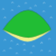
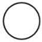

審査員一覧
合成士(主催者)
2008年より「（ ＾ω＾）は合成士のようです」を投下開始し、2009年完結。


円のようです◆MsdInw62ztuy
塩酸じゃないよ円さんだよ、でお馴染みのお方。代表作に「（ ＾ω＾）ブーンと円のようです」がある。2005年からとブーン系黎明期を知る人間らしい。最近はTwitter上で感想をつぶやいたり、「ブーン系小説シベリア図書館保管庫」スタッフとなったりと、マルチに活躍しているようだ。
匿名審査員
審査員の匿名X。 彼は何処から来たのか、何処に往くのか、誰も知らない。 ただ留年しないことが祈られるのみである。 匿名をいいことにフリーダムな採点を目論んでいるらしい。
トマト
「行きずりトマトsociety」の管理人。 まとめられている作品はまだ少ないが、他では見れない作品がまとめられている。 2012年4月1日に驚きの管理人交代を発表した。エイプリルフールではないらしい。 一体どのような審査をされるのか、注目して頂きたい。